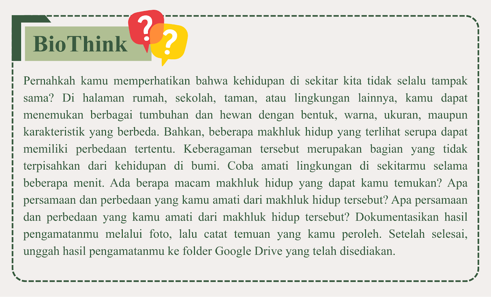
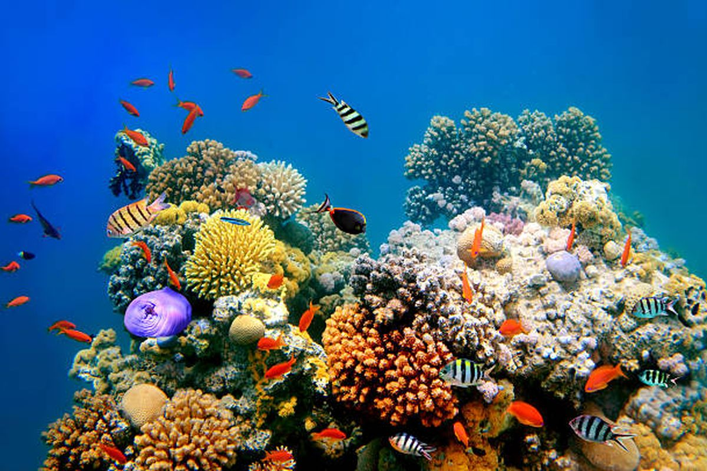
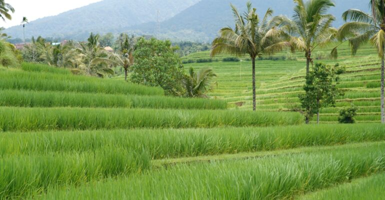
Istilah keanekaragaman hayati berasal dari kata biodiversity atau biodiversitas. Konsep biodiversitas merujuk pada adanya variasi atau perbedaan karakteristik yang terdapat pada makhluk hidup. Keanekaragaman hayati digunakan untuk menjelaskan jumlah, variasi, serta variabilitas organisme yang hidup di suatu wilayah. Menurut Konvensi Perserikatan Bangsa-Bangsa tentang Keanekaragaman Hayati, keanekaragaman hayati adalah keragaman organisme hidup yang berasal dari berbagai ekosistem, seperti ekosistem daratan, laut, dan perairan lainnya, beserta seluruh kompleks ekologi yang mendukung keberadaan organisme tersebut. Ruang lingkup keanekaragaman hayati meliputi keanekaragaman tingkat genetik, spesies, dan ekosistem.
Keanekaragaman hayati dapat ditemukan dalam berbagai bentuk dan memiliki tingkatan yang berbeda. Perbedaan tersebut dapat diamati mulai dari variasi dalam satu spesies, perbedaan antarspesies, hingga keberagaman ekosistem yang terbentuk dari interaksi antara makhluk hidup dan lingkungannya. Secara umum, keanekaragaman hayati dibedakan menjadi tiga tingkatan, yaitu keanekaragaman tingkat genetik, tingkat spesies, dan tingkat ekosistem. Ketiganya saling berkaitan dan menunjukkan beragamnya kehidupan yang terdapat di bumi. Untuk memperoleh gambaran awal mengenai ketiga tingkatan tersebut, perhatikan pengertian singkat pada setiap bagian berikut:
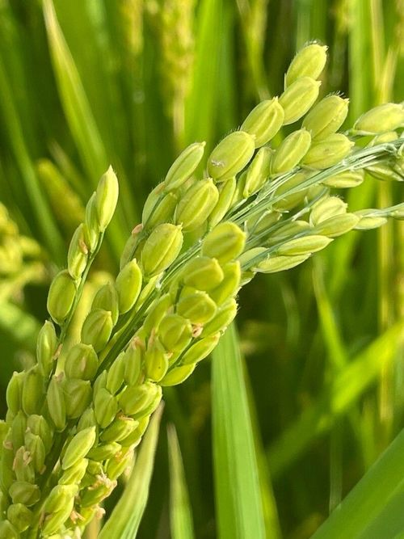
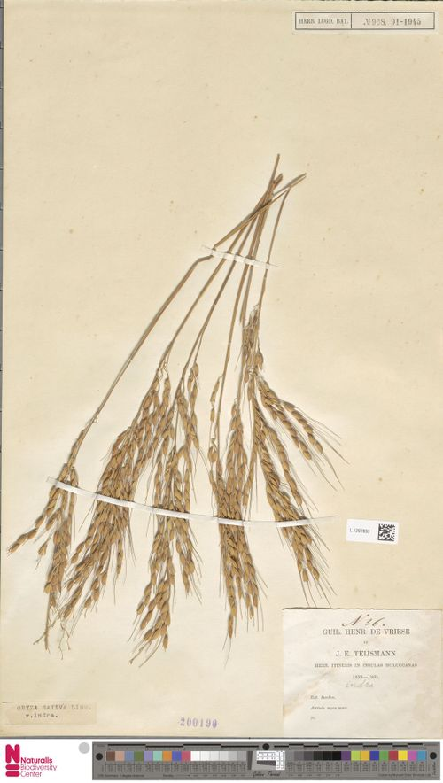
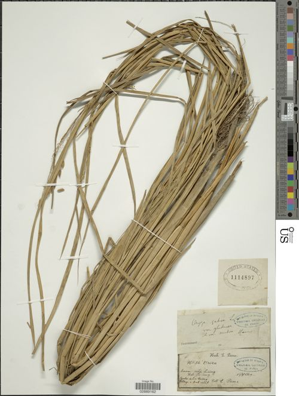
Keanekaragaman tingkat genetik merupakan variasi yang terjadi dalam satu spesies akibat adanya perbedaan susunan genetik antar individu. Variasi ini menyebabkan munculnya perbedaan sifat seperti warna, ukuran, bentuk, dan kemampuan adaptasi.
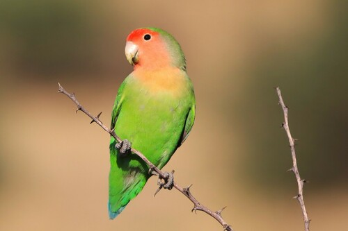
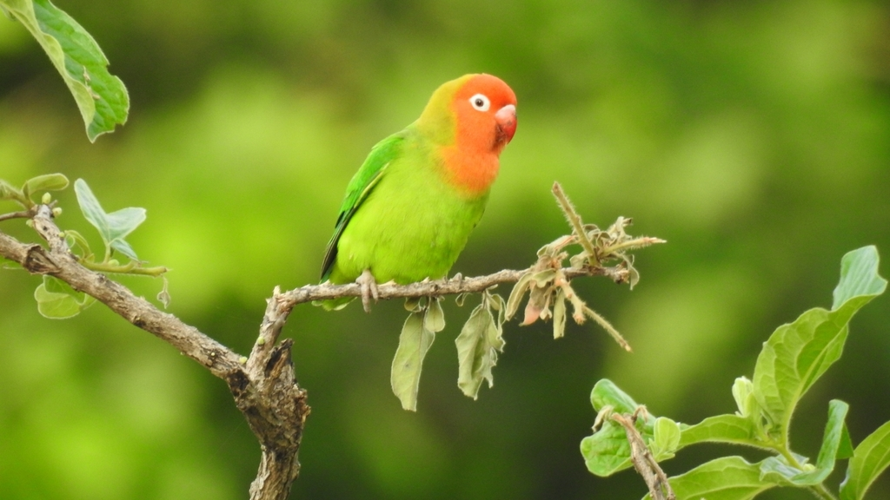
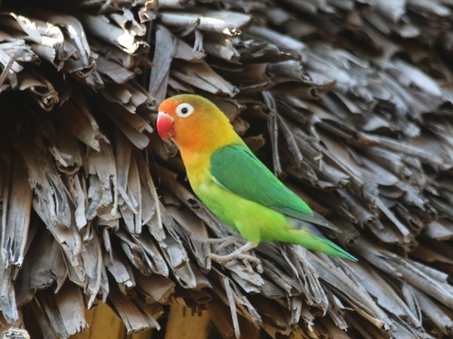
Keanekaragaman jenis atau spesies merupakan variasi yang terdapat dalam kelompok atau populasi makhluk hidup yang berada pada suatu ekosistem atau wilayah tertentu.
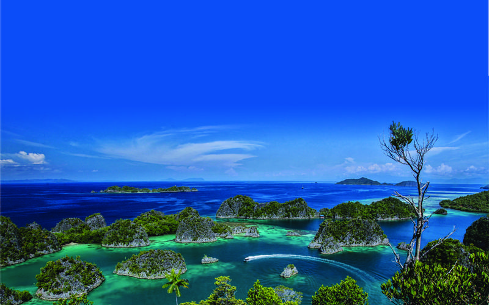
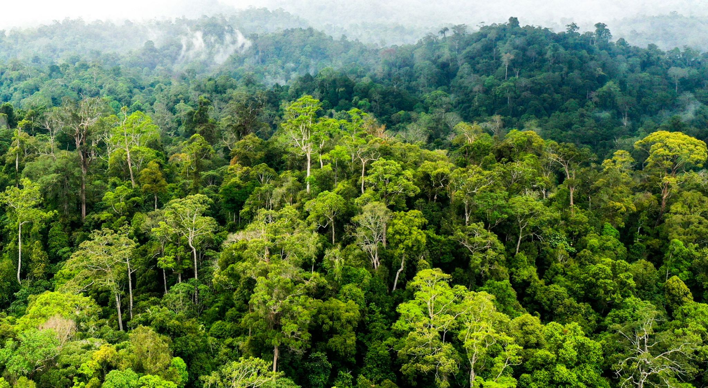
Keanekaragaman tingkat ekosistem merupakan keberagaman berbagai jenis lingkungan atau tempat hidup yang terdapat dalam suatu wilayah. Keanekaragaman ekosistem mengacu pada kompleksitas hubungan antara berbagai spesies yang membentuk suatu ekosistem serta interaksi dinamis antara organisme dengan lingkungannya.
Setelah mengenal pengertian dari masing-masing tingkatan keanekaragaman hayati, mari pelajari lebih lanjut karakteristik dan contoh dari setiap tingkatan. Pembahasan berikut akan membantu kamu memahami perbedaan antara keanekaragaman tingkat genetik, spesies, dan ekosistem secara lebih mendalam.
Keanekaragaman genetik merupakan hasil dari rekombinasi materi genetik (DNA) selama proses pewarisan, mutasi, aliran gen, dan drift genetik, yang menghasilkan variasi pada urutan DNA, profil epigenetik, struktur protein atau isoenzim, sifat fisiologis, dan sifat morfologis. Keanekaragaman tingkat genetik berperan penting dalam membantu spesies beradaptasi terhadap perubahan lingkungan, mempertahankan kemampuan hidup dan berkembang, serta menghadapi berbagai ancaman seperti penyakit dan perubahan iklim.
Variasi genetik juga menjadi dasar terbentuknya keanekaragaman spesies dan ekosistem karena memungkinkan munculnya garis keturunan baru. Namun, keanekaragaman genetik dapat dipengaruhi oleh perubahan lingkungan dan perkawinan silang. Ketika kondisi lingkungan suatu komunitas berubah dari waktu ke waktu, individu yang memiliki sifat lebih sesuai dengan kondisi lingkungan baru akan memiliki peluang lebih besar untuk bertahan hidup dan menghasilkan keturunan yang juga mampu beradaptasi dengan lingkungan tersebut. Contohnya, pada ngengat merica (Biston betularia) terdapat variasi warna, yaitu warna terang dan warna gelap. Ketika pencemaran industri mengubah lingkungan dan membuat permukaan pohon menjadi lebih gelap, individu warna gelap menjadi lebih tersamarkan dari predator, terutama burung. Karena lebih sulit terlihat, individu tersebut cenderung memiliki peluang lebih besar untuk bertahan hidup dan bereproduksi. Akibatnya, frekuensi ngengat berwarna gelap meningkat dalam populasi di wilayah industri. Sebaliknya, setelah tingkat pencemaran menurun dan lingkungan menjadi lebih cerah, frekuensi warna gelap kembali menurun.
Contoh keanekaragaman gen dapat ditemukan pada berbagai varietas padi, mangga, atau ayam yang memiliki ciri berbeda meskipun masih termasuk dalam satu spesies. Pada ayam, keanekaragaman gen dapat menyebabkan adanya perbedaan sifat pada individu dalam satu spesies. Perbedaan tersebut tampak pada ciri fisik, seperti warna dan pola bulu, tipe jengger, warna kulit, warna kaki, serta ukuran tubuh. Pada ayam lokal Indonesia, variasi fenotipik dan genetik yang cukup besar menunjukkan pentingnya karakterisasi ayam untuk seleksi, pemuliaan, dan konservasi.
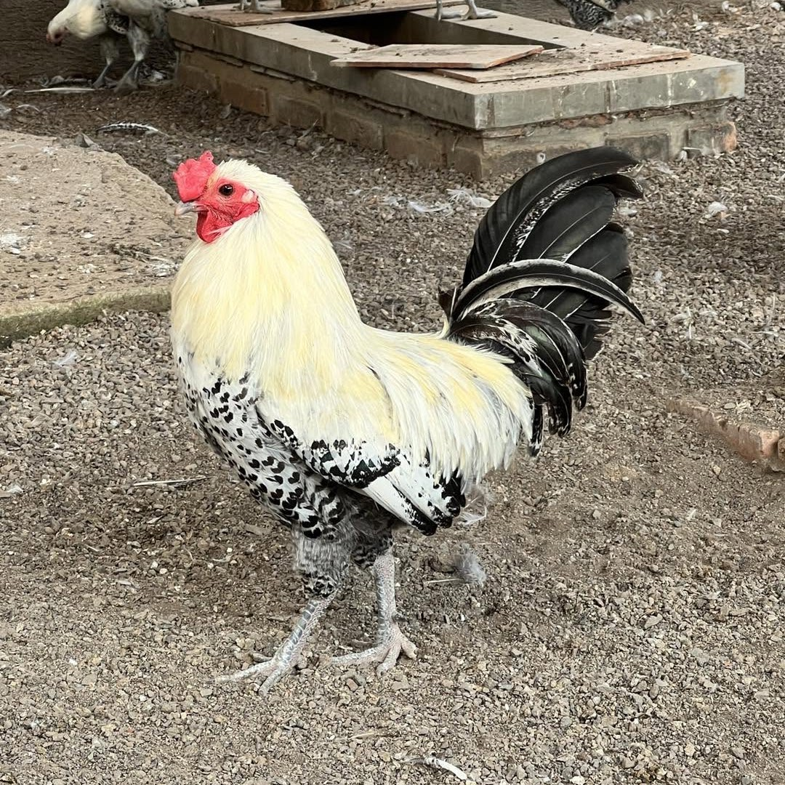
Ayam Arab
Sumber: Facebook Herman Suherman, 2025.
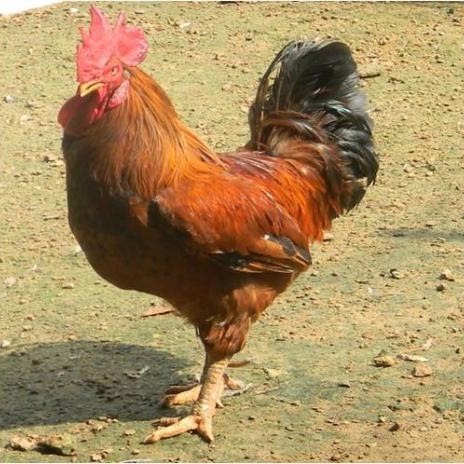
Ayam Merawang
Sumber: ditjenpkh.pertanian.go.id
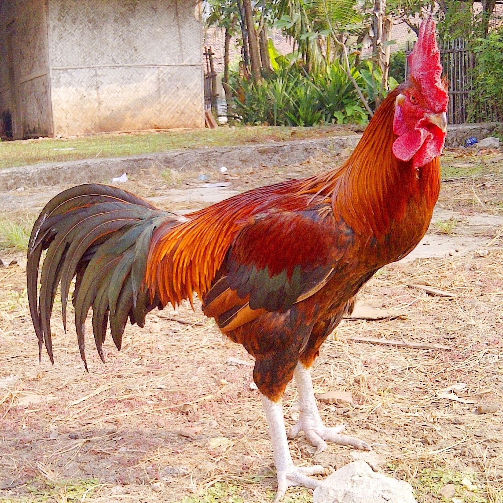
Ayam Pelung
Sumber: id.wikipedia.org
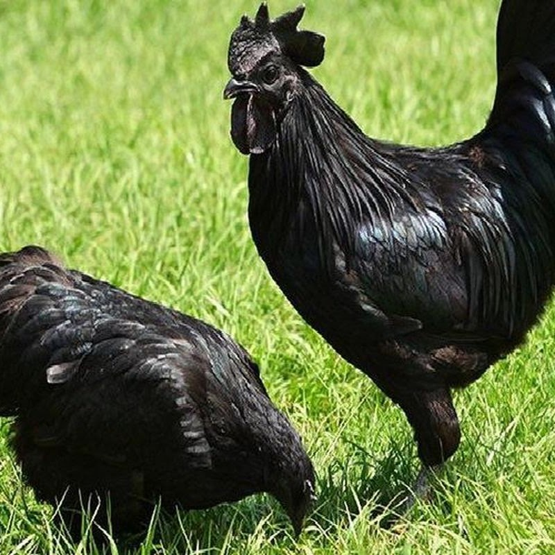
Ayam Cemani
Sumber: www.kompas.com
Perbedaan karakteristik beberapa jenis ayam di atas dapat dilihat pada tabel berikut:
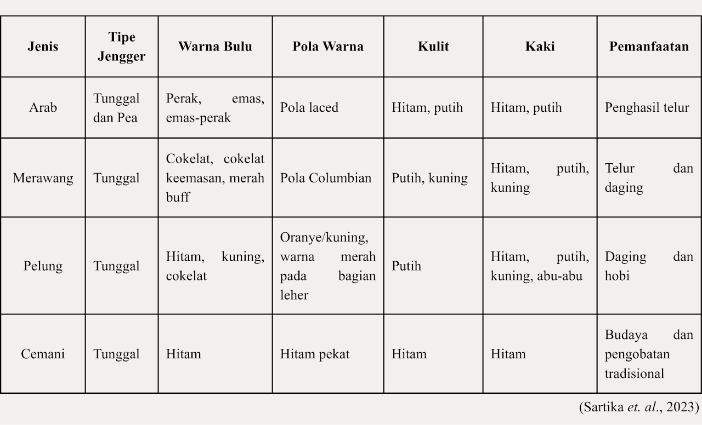
Keanekaragaman pada tingkat spesies mencakup berbagai variasi yang terdapat di antara spesies yang masih berada dalam satu familia. Keanekaragaman hayati tingkat jenis atau antarspesies lebih mudah dikenali dibandingkan keanekaragaman tingkat gen karena perbedaan karakteristik antarspesies umumnya tampak lebih jelas. Keanekaragaman pada tingkat spesies dapat ditunjukkan melalui adanya perbedaan karakteristik antarspesies, yang meliputi perbedaan morfologi, ekologi, dan genetik, serta adanya isolasi reproduksi. Perbedaan morfologi berkaitan dengan ciri fisik organisme, sedangkan perbedaan ekologi berkaitan dengan kondisi lingkungan dan interaksi organisme dengan lingkungannya. Perbedaan genetik menunjukkan adanya variasi pada materi genetik antarspesies, sementara isolasi reproduksi menunjukkan adanya hambatan reproduksi antara kelompok organisme yang berbeda. Contohnya, kuda (Equus caballus) memiliki 64 kromosom, sedangkan keledai (Equus asinus) memiliki 62 kromosom dapat menghasilkan keturunan hibrida apabila dikawinkan. Perkawinan silang antara keledai jantan dan kuda betina menghasilkan bagal (mule), sedangkan kuda jantan dan keledai betina menghasilkan hinny. Keduanya umumnya memiliki 63 kromosom, yaitu hasil penggabungan 32 kromosom dari kuda dan 31 kromosom dari keledai. Jumlah kromosom yang ganjil menyebabkan kromosom sulit berpasangan secara normal selama meiosis sehingga mule dan hinny umumnya bersifat infertil. Sterilitas tersebut berkaitan dengan perbedaan kromosom kedua spesies yang dapat menghambat pembentukan gamet melalui meiosis.
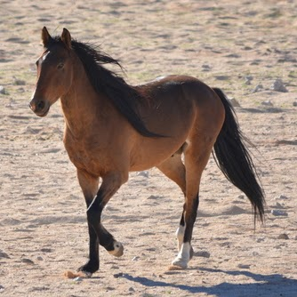
Kuda (Equus caballus)
Sumber: © Copper (www.inaturalist.org)
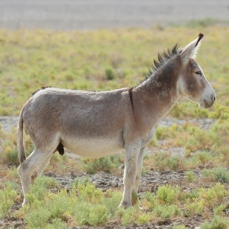
Keledai (Equus asinus)
Sumber: ©Justyn Stahl (www.inaturalist.org)
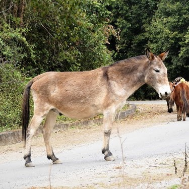
Mule (Equus caballus × Equus asinus)
Sumber: © Lena Chow (www.inaturalist.org)
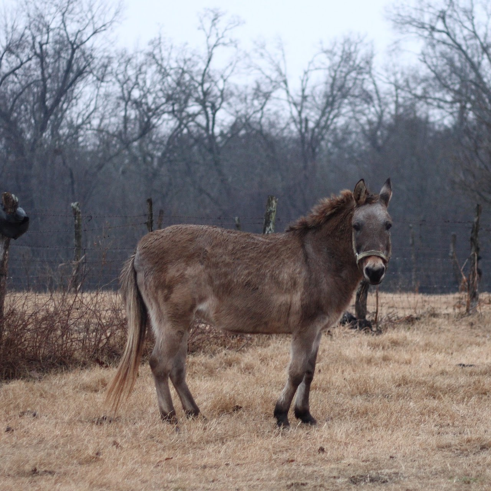
Hinny (Equus asinus x Equus caballus)
Sumber: © Creative Commons (id.wikipedia.org)
Keanekaragaman spesies tidak hanya ditentukan oleh banyaknya spesies yang ditemukan (species richness), tetapi juga oleh kelimpahan relatif atau tingkat kemerataan jumlah individu setiap spesies (species evenness). Dengan demikian, wilayah yang memiliki banyak spesies belum tentu memiliki keanekaragaman tinggi apabila hanya satu spesies yang sangat dominan. Semakin tinggi jumlah spesies dalam suatu ekosistem, maka semakin stabil pula ekosistem tersebut. Hal ini terjadi karena setiap spesies memiliki fungsi tertentu dalam rantai makanan maupun proses ekologis lainnya. Hilangnya satu spesies dapat memengaruhi populasi organisme lain dan mengganggu keseimbangan lingkungan. Salah satu contoh keanekaragaman tingkat spesies dapat ditemukan pada genus Solanum, yang memiliki berbagai spesies dengan karakteristik morfologi yang berbeda. Beberapa contohnya disajikan pada tabel berikut:
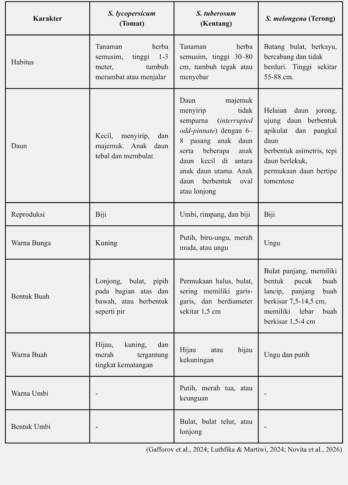
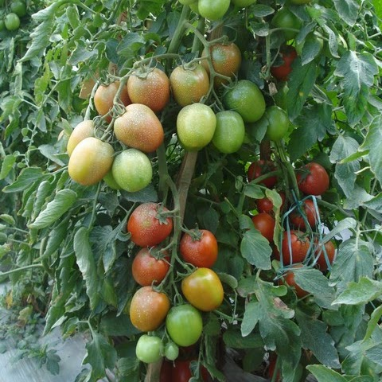
Tomat (Solanum lycopersicum)
Sumber: bbpplembang.bppsdmp.pertanian.go.id
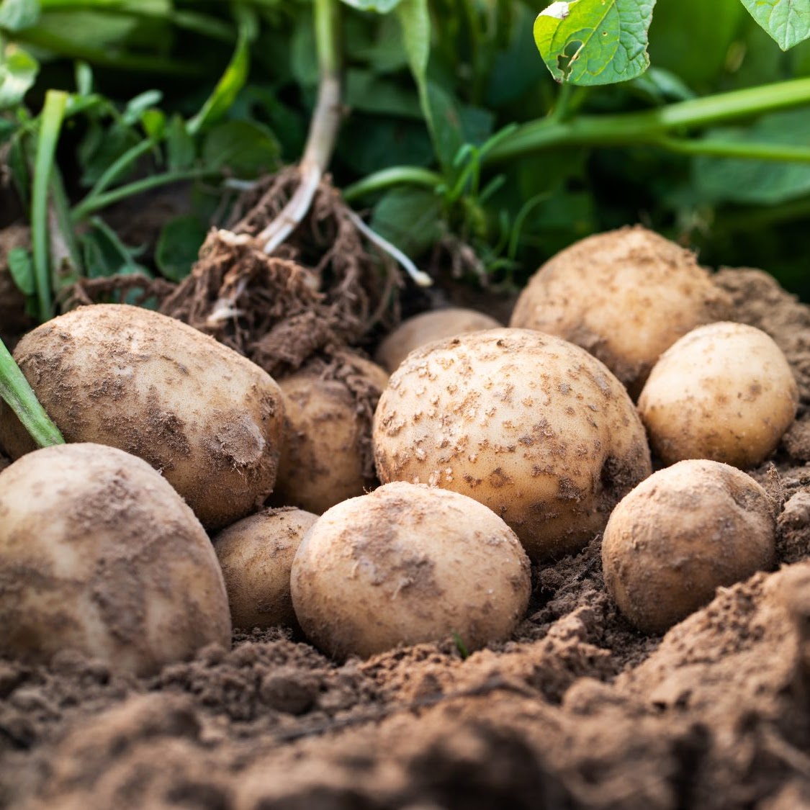
Kentang (Solanum tuberosum)
Sumber: www.botanic.cam.ac.uk
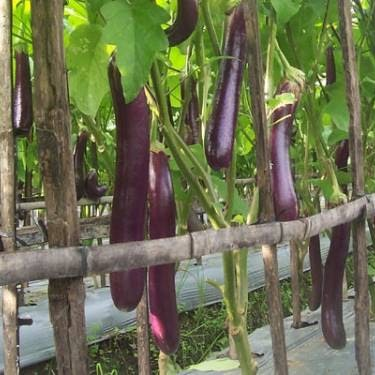
Terong (Solanum melongena)
Sumber: distankan.bulelengkab.go.id
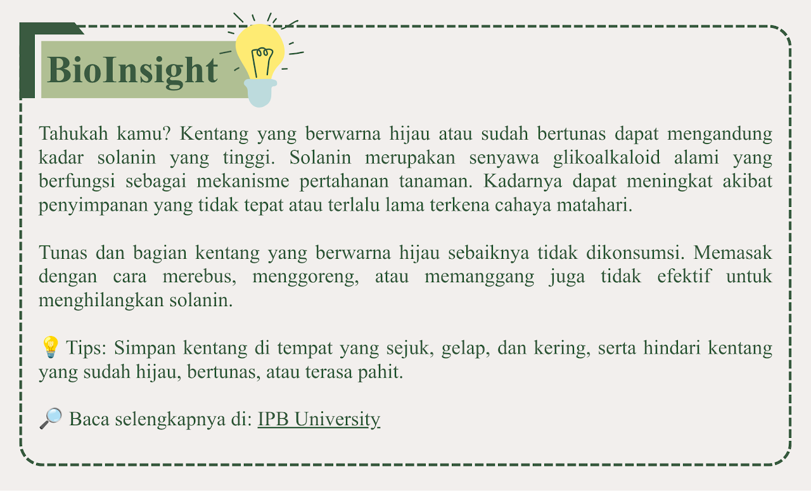
Istilah “ekosistem” pertama kali diperkenalkan pada tahun 1935 oleh Sir Arthur George Tansley (1871–1955), seorang ahli botani asal Inggris yang juga dikenal sebagai salah satu pelopor dalam bidang ekologi. Tansley mendefinisikan ekosistem sebagai suatu sistem fisik khusus yang tersusun atas organisme dan komponen anorganik yang berada dalam kondisi relatif stabil, bersifat terbuka, serta memiliki beragam ukuran dan jenis. Menurutnya, ekosistem tidak hanya mencakup keseluruhan organisme, tetapi juga seluruh faktor fisik yang membentuk lingkungan tempat organisme tersebut hidup. Keanekaragaman ekosistem mencakup variasi pada tingkat ekosistem secara keseluruhan, termasuk beragam habitat dan komunitas ekologis yang terdapat dalam suatu wilayah. Keberagaman tersebut berperan dalam memengaruhi aliran energi dan nutrisi, menjaga kestabilan ekosistem, serta mendukung penyediaan berbagai jasa ekosistem. Keanekaragaman ekosistem dapat terbentuk dan dipengaruhi oleh berbagai kondisi lingkungan yang terdapat di dalamnya. Untuk memahami hal tersebut, ekosistem dapat ditinjau berdasarkan komponen penyusunnya, yaitu komponen biotik dan abiotik.
Komponen biotik dan abiotik dalam ekosistem saling berinteraksi dan memiliki hubungan yang erat. Komponen biotik mencakup seluruh makhluk hidup, mulai dari mikroorganisme hingga organisme tingkat tinggi, sedangkan komponen abiotik meliputi berbagai unsur tidak hidup yang terdapat di lingkungan. Keberlangsungan hidup organisme dipengaruhi oleh kondisi lingkungan abiotiknya. Ketersediaan dan kondisi faktor abiotik, seperti suhu, cahaya matahari, kelembapan, curah hujan, dan air, dapat memengaruhi persebaran serta kelimpahan organisme dalam suatu ekosistem. Dengan demikian, perubahan pada kondisi lingkungan dapat turut memengaruhi kehidupan dan keberadaan organisme di dalamnya. Selain tersusun atas komponen biotik dan abiotik yang saling berinteraksi, suatu ekosistem memiliki beberapa karakteristik yang menunjukkan berlangsungnya proses kehidupan di dalamnya. Menurut Molles dan Sher (2018), ekosistem memiliki beberapa ciri utama, yaitu:
Memiliki sumber energi yang tersedia secara berkelanjutan.
Organisme dapat menyimpan energi dalam bentuk materi organik.
Terjadi siklus materi antara organisme dan lingkungan secara berkelanjutan.
Energi mengalir melalui tingkat-tingkat dalam ekosistem, dari satu tingkat ke tingkat lainnya.
Jenis-jenis ekosistem terbagi menjadi dua, yaitu ekosistem akuatik dan ekosistem terestrial. Namun, campur tangan manusia dalam seluruh ekosistem di planet ini berlangsung secara intensif dan meluas, sehingga tidak semua ekosistem terestrial dan akuatik tetap dalam kondisi alami. Oleh karena itu, ekosistem yang telah mengalami perubahan disebut sebagai ekosistem buatan, ekosistem hasil rekayasa manusia, atau ekosistem antropogenik. Beberapa contoh ekosistem disajikan pada tabel berikut:
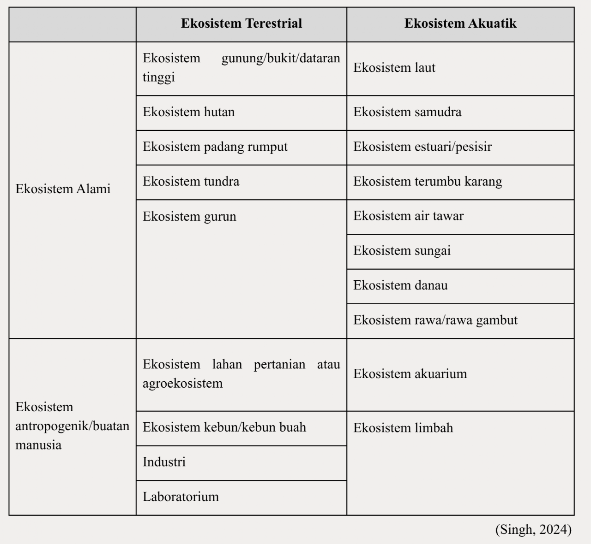